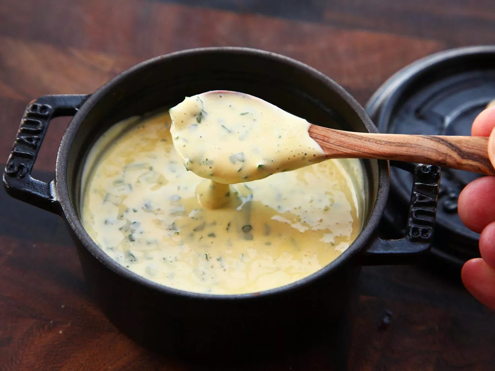

Easy Bearnaise Sauce Recipe

This is a foolproof Bearnaise sauce recipe, courtesy of Kenji J. Alt Lopez, The Food Lab, and Serious Eats.
Ingredients:
- 1/4 cup white vinegar
- 1/2 cup white wine
- 3 sprigs chervil, leaves finely minced.
- 3 sprigs tarragon, leaves finely minced.
- 1 small shallot, thinly sliced
- 1/2 teaspoon whole black peppercorns
- 2 egg yolks
- Kosher salt
- 1 1/2 sticks (12 tablespoons) unsalted butter
Directions:
- Combine wine, vinegar, herb stems, shallots, and black peppercorns in a small saucepan. Bring to a simmer over medium-high heat and lower heat to maintain a gentle simmer. Cook until reduced to about 1 1/2 tablespoons of liquid, about 15 minutes. Carefully strain liquid through a fine-mesh strainer into a small bowl, pressing on the solids with the back of a spoon to extract as much liquid as possible.
- Combine wine reduction, egg yolk, and a pinch of salt in the bottom of a cup that barely fits the head of an immersion blender. Melt butter in a small saucepan over high heat, swirling constantly, until foaming subsides. Transfer butter to a 1-cup liquid measuring cup.
- Place head of immersion blender into the bottom of the cup with the wine reduction and turn it on. With the blender constantly running, slowly pour hot butter into cup. It should emulsify with the egg yolk and wine reduction. Continue pouring until all butter is added. Sauce should be thick and creamy (see notes). Season to taste with salt. Whisk in chopped tarragon and chervil, if using. Serve immediately, or transfer to a small lidded pot and keep in a warm place for up to 1 hour before serving. Béarnaise cannot be cooled and reheated.